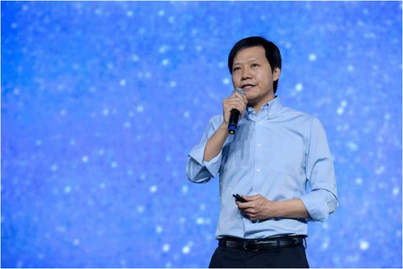

<div class="container midContainer">
  <div class="Content3"> 
        <div class="row">
             <div class="col-md-12">
                 <div class="text-center bottom15px"><h1 class="font-bold bottom25px">Xiaomi opens second headquarters as it doubles down on AI development</h1></div>
             </div>
        </div>

         <div class="row  bottom25px" style="background-color:#fff;padding-top:20px;">
              <div class="col-md-12 desktop-padding" style="padding: 15px 25px 15px 25px;">
                <div class="career-description bottom25px" style="color: black;">
                  
                  <p></p><p>Smartphone maker Xiaomi on Wednesday officially opened its second headquarters in Wuhan, the capital city of China’s central Hubei province. The building will house 10,000 employees over the next decade as the company invests more in AI research.</p><p>The new headquarters, located in the Wuhan East Lake High-tech Development Zone, is a research and development center for AI, internet of things, big data, software, and internet entertainment. Xiaomi’s first headquarters is in Beijing.</p><p>Currently, the Wuhan facility houses about 2,000 employees, mostly local recruits, who work on projects including research and development on Xiaomi’s open platform for the Xiao Ai smart voice assistant, as well as a Xiao Ai data platform.</p><p>Xiaomi founder and chief executive Lei Jun, a Wuhan native, decided to build the headquarters in his hometown two years ago after the city launched a campaign exhorting alumni of Wuhan universities to return to the city and contribute to its development. Construction began in November last year.</p><p>“Wuhan is the starting point of my life and my career, and I have many memories of my youth here,” Lei said at the launch ceremony. “That’s why I want to do something for Wuhan and the Wuhan East Lake High-tech Development Zone.”</p><p>The company’s move to build a second headquarters in Wuhan also comes as local governments in cities such as Wuhan, Xian, and Chengdu make a bigger push towards boosting the technology industry. Shanghai-based ecommerce platform Xiaohongshu opened a new facility in Wuhan last year.</p><p>These cities are popular among tech companies because they are near universities and have access to technology talent.</p><p>Last month, Xiaomi posted its slowest-ever quarterly revenue growth since it went public in 2017, as it grappled for market share with rival Huawei. Huawei has shifted its focus to increasing sales in China, following a slowdown in overseas sales after the company lost access to Google services on Android when it was put on a US trade blacklist.</p><p>While sales of smartphones still make up the bulk of Xiaomi’s revenues, it has increasingly promoted its online advertising sales, which account for about 10% of revenue. The company is also looking towards international expansion in markets like Southeast Asia as smartphone sales in its home market slow.</p><p><em>Source by :&nbsp;www.techinasia.com</em></p><p></p>
                </div>
              </div>
         </div>   
  </div>    
</div>